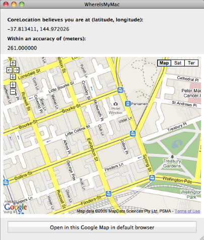

Please note: this article is part of the older "Objective-C era" on Cocoa with Love. I don't keep these articles up-to-date; please be wary of broken code or potentially out-of-date information. Read "A new era for Cocoa with Love" for more.
WhereIsMyMac, a Snow Leopard CoreLocation project
In Snow Leopard, you can ask for the computer's location. Without a GPS, how accurate could that be? The answer in my case is: very accurate. In this post, I'll show you how to write a CoreLocation app for the Mac that shows the current location in Google Maps, so you can see exactly where your computer thinks it is.
Where Is My Mac?
In this post, I present the following sample project:
You can download the Xcode 3.2 project here: WhereIsMyMac.zip (33kB). Mac OS X 10.6 is required.
The program shows your current location, centered in the map. The zoom level is set so that the accuracy radius reported by CoreLocation is exactly half the width of the window.
So how accurate is it? For me, my actual location was within about 50 meters of the detected location.
First, I'll talk about the extremely simple code involved. Afterwards, I'll discuss how CoreLocation gets this information.
Implementation
If you haven't already used CoreLocation on the iPhone, it's really simple: just turn it on and let it update you when it has location information.
- (void)applicationDidFinishLaunching:(NSNotification *)aNotification
{
// Turn on CoreLocation
locationManager = [[CLLocationManager alloc] init];
locationManager.delegate = self;
[locationManager startUpdatingLocation];
}Then all you need to do is receive the location updates and load the map at the new location when received. We do this in the CLLocationManagerDelegate methods.
- (void)locationManager:(CLLocationManager *)manager
didUpdateToLocation:(CLLocation *)newLocation
fromLocation:(CLLocation *)oldLocation
{
// Ignore updates where nothing we care about changed
if (newLocation.coordinate.longitude == oldLocation.coordinate.longitude &&
newLocation.coordinate.latitude == oldLocation.coordinate.latitude &&
newLocation.horizontalAccuracy == oldLocation.horizontalAccuracy)
{
return;
}
// Load the HTML for displaying the Google map from a file and replace the
// format placeholders with our location data
NSString *htmlString = [NSString stringWithFormat:
[NSString
stringWithContentsOfFile:
[[NSBundle mainBundle]
pathForResource:@"HTMLFormatString" ofType:@"html"]
encoding:NSUTF8StringEncoding
error:NULL],
newLocation.coordinate.latitude,
newLocation.coordinate.longitude,
[WhereIsMyMacAppDelegate latitudeRangeForLocation:newLocation],
[WhereIsMyMacAppDelegate longitudeRangeForLocation:newLocation]];
// Load the HTML in the WebView and set the labels
[[webView mainFrame] loadHTMLString:htmlString baseURL:nil];
[locationLabel setStringValue:[NSString stringWithFormat:@"%f, %f",
newLocation.coordinate.latitude, newLocation.coordinate.longitude]];
[accuracyLabel setStringValue:[NSString stringWithFormat:@"%f",
newLocation.horizontalAccuracy]];
}Notice here that I load the HTML from a file, then use it as a format string, replacing the % sequences. This means that I need to escape the two percent characters in the file that need to remain percents (this is done by turning them into double percents).
The only other relevant code is the code to convert from meters (the unit for accuracy in CoreLocation) to Longitude and Latitude (used to specify the zoom factor to Google Maps).
This too is pretty simple: it's just a scale factor for the latitude and a scale plus a trigonometric function for the longitude:
+ (double)latitudeRangeForLocation:(CLLocation *)aLocation
{
const double M = 6367000.0; // mean meridional radius of curvature of Earth
const double metersToLatitude = 1.0 / ((M_PI / 180.0) * M);
const double accuracyToWindowScale = 2.0;
return aLocation.horizontalAccuracy * metersToLatitude * accuracyToWindowScale;
}
+ (double)longitudeRangeForLocation:(CLLocation *)aLocation
{
double latitudeRange =
[WhereIsMyMacAppDelegate latitudeRangeForLocation:aLocation];
return latitudeRange * cos(aLocation.coordinate.latitude * M_PI / 180.0);
}People who are extremely fussy about distance to latitude conversions don't use a constant meridional radius of curvature for Earth (since Earth is an oblate ellipsoid, this value varies from around 6,330,000 to almost 6,400,000) but a constant value is sufficient for most purposes.
The accuracyToWindowScale value is used so that the accuracy range reported by CoreLocation ends up as half the window width (instead of 100% of the window width).
Where does CoreLocation get this information?
The documentation is somewhat vague on where CoreLocation gets this information. Apple imply that there are a few different sources of information that may be used, depending on what is available.
My first thought was: maybe it is using my IP address to determine my location.
Looking up my IP address using two different online IP geocoding services revealed the exact center of Australia as my location from my IP address — almost 2000 kilometers from where I actually am.
My second thought was maybe it is geocoding my address in Address Book. That's not the answer either, since that address is out-of-date and is at least 5 kilometers away.
The answer is that I have WiFi on my Mac. Apple uses the WiFi networks you can see from your current location and correlates that against a database of known locations of WiFi networks (yes, companies drive down streets and record the approximate street addresses of WiFi networks).
So my neighbouring networks: "SweetCheeks", "TheSherriff", "MrBojangles" and "Netgear5" are revealing my location (although I doubt the names are important — its probably the WiFi MAC addresses that are tracked).
Conclusion
You can download the Xcode 3.2 project here: WhereIsMyMac.zip (33kB). Mac OS X 10.6 is required
The only use I've seen for CoreLocation in Snow Leopard so far is setting the Time Zone automatically in the Date & Time System Preferences panel. This doesn't require a great deal of accuracy but it turns out that CoreLocation is capable of much more.
Of course, I'm only reporting on the accuracy that I see, which is anecdotal evidence only. I'd be interested to know how accurate (or inaccurate) this is for other people.
As you can see in this sample application, the code involved is very simple. Even if it isn't accurate for everyone, it would make a good option in many applications.
Building for earlier OS versions from Snow Leopard
StreamToMe Version 1.1 available